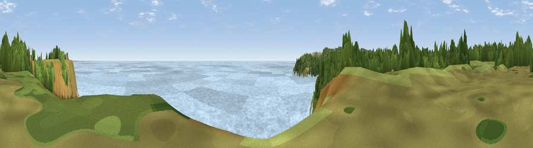

Viewpoint near Brixham
#14145 in England · top 32% of its area beats it · near Brixham · path 61 mWhere it is
The exact computed spot (SX 94175 56075). Click the marker for map links.
Public access: the nearest public right of way is about 61 m away — the final stretch may cross private land. Computed from Natural England's CRoW access layer and OpenStreetMap rights of way — not the legal definitive map. Always verify locally.
The view, rendered

A 360° render of this exact spot computed from the terrain model, tree cover and land cover — summer colours, afternoon light, calibrated against photographs of famous viewpoints. Real trees, hedges and buildings will differ in detail.
The panorama
Grey silhouette: terrain skyline in each direction (720 bearings, Earth curvature and refraction included). Dashed green: skyline with trees (+15 m) and buildings (+8 m) as obstacles. Blue strip: how far the ground is visible on each bearing.
Where the view opens
Wedge length = distance to the farthest visible ground on that bearing (vegetation-aware). Rings at 10, 25 and 50 km.
What fills the view
81% water · 10% grassland · 8% woodland ·
Angular shares of the visible panorama (visual magnitude), not map area. Landscape diversity 0.28 (0–1 Shannon).
Key numbers
More beautiful places nearby
The staircase of upgrades: each row has a higher view potential than everything closer. Driving times are estimates from straight-line distance, calibrated against real road routing — check an actual route before setting out.
| Place | Direction | Drive | Score |
|---|---|---|---|
| Viewpoint near Brixham | NE · 1 km | ~2 min | 66.5 |
| Viewpoint near Kingswear | SSW · 5 km | ~11 min | 82.2 |
| Viewpoint near Kingswear | SSW · 6 km | ~13 min | 83.8 |
| Viewpoint near Stokeinteignhead | N · 14 km | ~25 min | 84.1 |
| Viewpoint near East Prawle | SW · 26 km | ~42 min | 84.6 |
| High Peak | NNE · 34 km | ~52 min | 85.3 |
| Golden Cap | NE · 59 km | ~81 min | 88.7 |
| The Knoll | ENE · 67 km | ~90 min | 91.0 |
50.39500, -3.49019 · source: screening · position refined by local search. Computed location — check access rights before visiting.